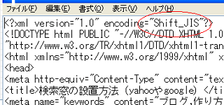
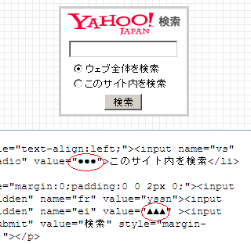
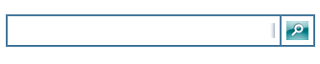

無料ブログの検索窓の作り方
ブログに検索窓を作る際、yahooやgoogle,あるいはmsnなどが無料で提供している検索窓（search box）を設置しておくことをおすすめします。
無料ブログサービスでも、たいていはデフォルトで設置されている検索窓を利用できますが、検索エンジンが提供している検索窓の方が高機能です。
ヤフー検索窓の作り方
シーサーブログの場合、検索窓のhtmlタグを取得してコンテンツの自由欄にはりつければ表示されます。
まず、ヤフーの検索窓の設置についてですが、以下のページから登録するとよいでしょう。
yahoo公式サイト：
カスタムサーチ - Yahoo!検索
まず検索窓の種類を選択しますが、「ウェブ全体を検索するタイプ」と、「自分のサイト内も検索するタイプ」の２種類があると思います。
ブログ内検索はヤフーにインデックスされているページがなければ検索結果には表示されませんので、作りたてのブログの場合はしばらくの間何も表示結果には表示されないかもしれません。
文字コードの選択
むずかしいのはコードの選択とドメイン名だと思いますが、ブラウザに「ソースの表示」の箇所があるので、最初のメタタグあたりをみれば文字コードがどれかわかると思います。

ちなみに、シーサーブログの場合はShift_JISです。

次にドメイン名ですが、ブログのURLから最初の「Http://」と最後の「/」をのぞいたサブドメイン名（hoge.example.com）で登録したらうまくいきました。

●とか▲の箇所を対応させるものにコピペで書き換えればタグが完成します。あとは、タグ全部をコピペでシーサーブログのデザインのコンテンツの自由欄にはりつけて設定を保存し、再構築すれば表示されるはずです。
うまくいかなければ、ウェブ検索のみの簡単な方で作成してみるとよいでしょう。
検索窓のＨＴＭＬ
シーサーブログの場合、XHTML1.0 Transitionalという書き方で書かれていますが、上で作成した検索窓のHTMLタグとは若干書き方が違うようなので、気になる方は修正してみるといいといいと思います。
ヤフーのヘルプをみてみると、HTMLのタグの変更自体は問題ないようです。
Yahoo!検索ヘルプ
具体的には、例えば＞で終わっている箇所を /＞にするとかそんな感じです。こちらのサイトで変更箇所を指摘してくれるので、そのとおりに修正すればよいでしょう。
ＨＴＭＬチェック
これは特にやってもやらなくても意味はありませんが、検索エンジン対策にはなるかと思います。
ＭＳＮの検索窓の作り方
ＭＳＮ公式サイト：
ＭＳＮ検索窓の設置（終了）

次にＭＳＮのライブサーチの検索窓「Live Search Box」を設置してみました。ためしに適当に入力して検索してみましたが、まだあまりインデックスはされていないようです。
こちらのＭＳＮの検索ボックスはJavaScriptのようなもので書かれているようなので、詳しくはわかりませんが、高性能な感じがあります。ＭＳＮのライブサーチの場合はけっこう上級者向けの検索窓のようです。
ＭＳＮの場合、自分のドメインを登録しておくと、まず「自分のドメインのみ」の検索結果を出してくれて、それでも情報がないときにウェブ全体を検索できる機能となっています。
デザインもロゴなどの表示はなくシンプルなのでいいと思います。ヤフーの検索窓と同じ手順でやれば設置できるかと思います。
グーグルの検索窓の作り方
google検索窓の公式サイト：
Google カスタム検索
次にグーグルの検索窓の作り方ですが、ヤフーと同じで文字コードやドメイン名を書き換えるだけです。
グーグルの場合、無料版ではロゴなどを消すことができませんが、グーグルアドセンスのアドセンス検索窓を設置すると、背景の色やロゴなどもカスタマイズできます。
このグーグルアドセンスは自分のブログに広告なども表示でき、そこから収益をえることができるシステムですが、検索窓の検索結果欄の広告をクリックした際にも収益を得ることができるようです。
- アドセンスの検索窓がリニューアル
グーグルアドセンスのアドセンス検索窓がリニューアルしたとのことなので、さっそく使用してみました。 このアドセンス検索まどはいろいろな改良がされて、かっこいい検索窓になったようです。 グーグルの検索... - Ｗ３Ｃvalidなヤフー検索窓の作成
Ｗ３ＣっていうところでＨＴＭＬの書き方をきめているようですけど、このＷ３Ｃの規格にかなった形式でＨＴＭＬを書いていくと若干ＳＥＯ的にもいいようです。 自分のブログのＨＴＭＬがこのＷ３Ｃの規格にあって... - 検索窓の設置に関するＨＴＭＬ
検索窓の設置方法でいまだによくわからないのは、検索窓のＨＴＭＬの形式についてです。ちなみに、このブログのＨＴＭＬはXHTML 1.0 Transitionalという形式でかかれているようです。これはデ... - ブログにヤフーカスタムサーチを設置
ブログを作成するとデフォルトで検索窓がついていますが、シーサーブログの場合はもともとヤフー検索と連動している検索窓になっているようです。 そのほかにも、自分でカスタマイズな検索窓を設置しようと思った...